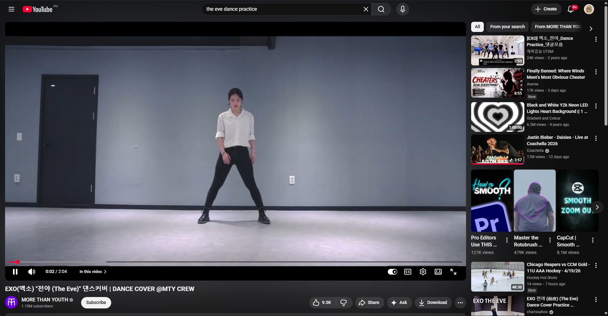
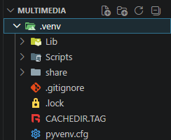
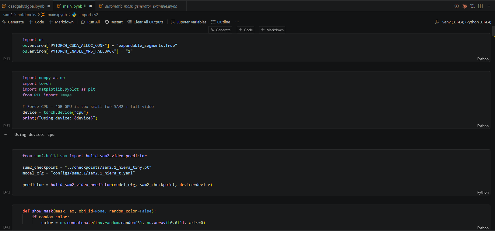
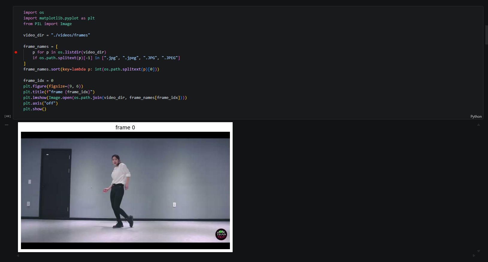
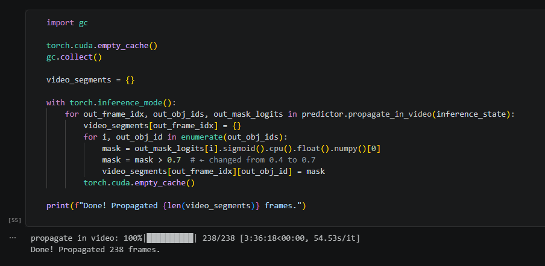
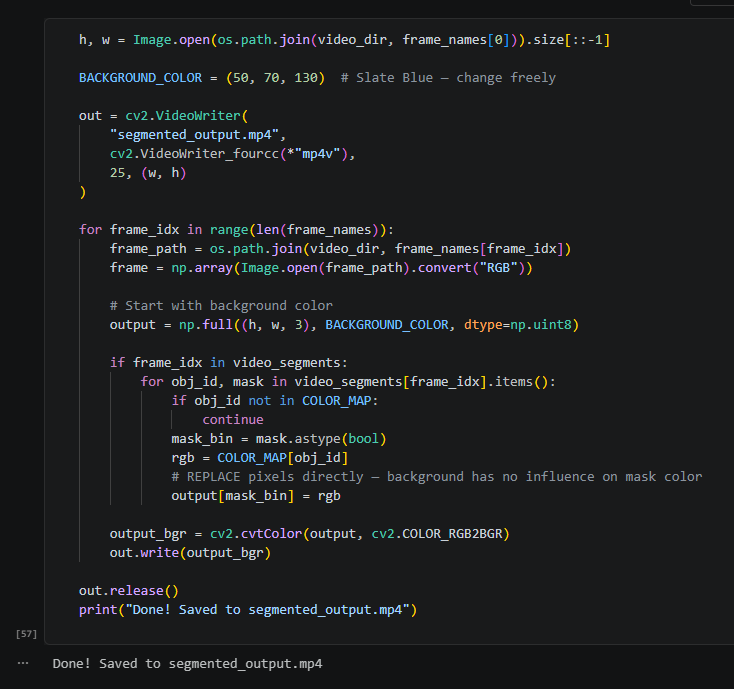

Follow my comprehensive journey through the art of rotoscoping from week 3 to week 13. Each video showcases the progression of skills and techniques learned throughout this creative process.
12-week journey from basics to advanced rotoscoping techniques
Step-by-step journey through frame-by-frame animation mastery

Select and prepare the perfect video reference. Choose the right footage and adjust frame rate for optimal rotoscoping results.
Install Python and SAM2 (Segment Anything Model 2) for advanced AI-powered video segmentation and rotoscoping.

Configure SAM2 model parameters and prepare the video processing pipeline for accurate segmentation.


Use Python to load the video file and prepare frames for SAM2 processing. The AI model handles automatic segmentation for precise rotoscoping.
SAM2 automatically segments and traces each frame with AI precision, dramatically reducing manual work while maintaining accuracy.

Import rotoscoped animation to CapCut for background effects, visual enhancements, and professional finishing touches.

The culmination of weeks of dedicated work, showcasing evolution from basic techniques to professional results
Professional-quality rotoscope animation demonstrating advanced frame-by-frame techniques and artistic precision.
Next ProjectThe original source material traced frame-by-frame
Disclaimer: This video is for educational purposes only. All rotoscoping work shown here is created for learning and demonstration of animation techniques. The final animations represent the culmination of my academic journey in multimedia arts.
The source material that served as the foundation for this rotoscoping project, traced frame-by-frame to create the final animation.
Explore more creative projects and discover the full range of multimedia work